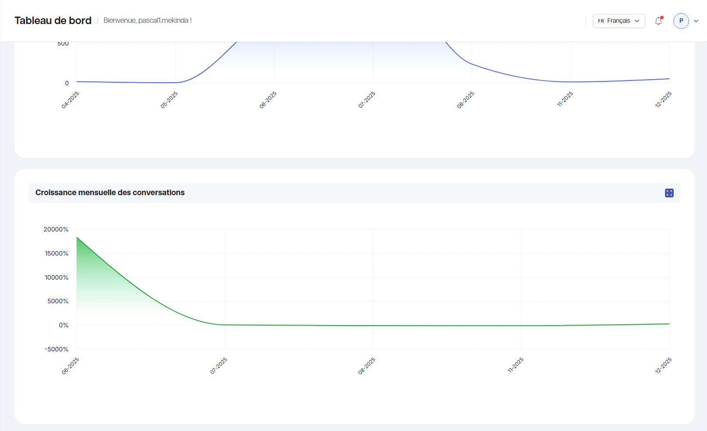
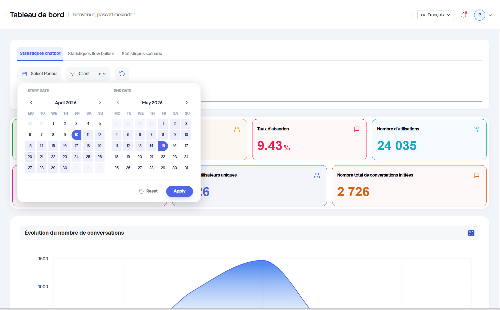

Tableau de bord Sema Core
Le tableau de bord permet de suivre l’activité de Sema Core. Il donne une vision rapide des conversations, des flows, des scenarios, et des résultats.
Objectif du module
Le tableau de bord sert à :
Vérifier l’activité récente ;
Suivre les performances ;
Contrôler les volumes de conversations ;
Identifier les tendances ;
Préparer les rapports à partager avec l’équipe.

Ouvrir le tableau de bord
1. Connectez-vous à Sema Core.
2. Dans le menu, cliquez sur Tableau de bord ou Dashboard.
3. Patientez pendant le chargement des indicateurs.
4. Vérifiez la période active affichée dans les filtres.
Lire les indicateurs clés
Selon votre configuration, le tableau de bord peut afficher :
Le nombre de conversations ;
Le nombre de contacts ;
Le volume de messages envoyés ;
Les conversations actives ou terminées ;
Les différents temps de réponse (utilisateur, bot, global) ;
Les mots clés les plus utilisés ;
Les taux de complétion des scénarios ;
Les performances par période ;
Les résultats des flow ou scénarios.
Pour lire correctement un indicateur :
1. Vérifiez son libellé.
2. Vérifiez la période utilisée.
3. Comparez la valeur avec la période précédente si l’information est disponible.
4. Ouvrez le détail si une carte ou un graphique est cliquable.
{kind=link}

Utiliser les filtres
Les filtres permettent d’afficher une partie précise des données.
Filtres courants :
Période ;
Client ;
Pour appliquer un filtre :
1. Cliquez sur le champ de filtre.
2. Sélectionnez la valeur souhaitée.
3. Cliquez sur Appliquer.
4. Vérifiez que les graphiques se mettent à jour.
{kind=link}

Interpréter les graphiques
Les graphiques permettent de visualiser les tendances. Ils peuvent afficher les conversations, les messages et les performances d’engagement.
Bonnes pratiques :
Survolez les courbes ou barres pour afficher les valeurs détaillées ;
Comparez les pics d’activité avec les campagnes envoyées ;
Vérifiez si une baisse correspond à une période sans action marketing ;
Utilisez les filtres pour isoler une période.
Points de contrôle
La période est-elle correcte ?
Les filtres sont-ils bien appliqués ?
Les données affichées correspondent-elles au module attendu ?
Les résultats doivent-ils être exportés ou simplement consultés ?
Bon à savoir
Astuce
Si les chiffres semblent incorrects, commencez par réinitialiser les filtres. Dans beaucoup de cas, les données attendues sont masquées par une période ou un statut trop restrictif.